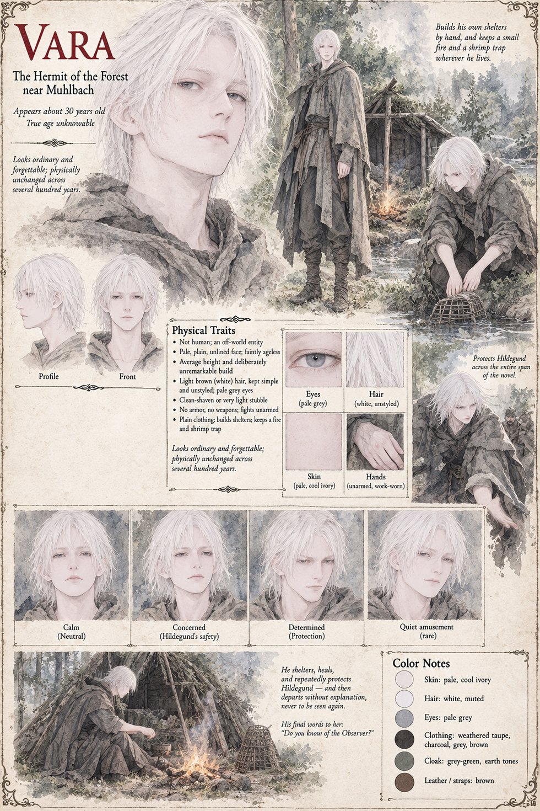

Vara
“The hermit” for nearly the whole of the case, named once · looks no older than thirty · has not aged in several hundred years · a long way from anything he might once have called home
A pale hermit who lives in a shack of his own building in the forest north of the old Muhlbach road, with a fire that never seems to need feeding and a bend in the river he favours for shrimp. He looks no older than thirty and has the stillness of a man trained, at some point he has no intention of discussing, to stand very still right up until the moment he no longer needs to. He opens the door before the second knock to a wounded girl and a guard, says In, closes her wound with a paste the colour of river clay, and lies awake afterwards over the nine miles of trackless dark she crossed to find a door she could never have known existed. Everyone calls him the hermit. When Emmerich goes looking, Vahlreth's records turn him up across four generations, as the solitary tenant of the northern clearing and, in a tax dispute older than Otwin's dukedom, as a tenant who “paid nothing, aged not at all, and could not be made to answer for either”.
He is not what Reinolt decides he is, a disgraced soldier with a taste for fishing. He has built an entire method, over more years than the kingdom has existed, out of never giving anyone a true number to work from: no speed they can clock, no strength they can measure, no healing they cannot explain away as skill. At the ford, against twenty men, he lets it go. For him it is not fast so much as uncrowded, the world arriving one clean decision at a time, the nearest thing left to him, after this many centuries, to peace; for the men on the other side it is an arithmetic error that someone else has made. Afterwards he kneels in the mud rubbing a knee that has not ached in several hundred years and lets Reinolt nearly laugh. He keeps an older caution too, one he has never explained to anyone on this world: certain workings he will simply not do here, because they leave a mark on the world's own quiet hum that travels further than any army and might be answered from somewhere worse than a usurper's soldiers or an alien auditor's ledger. He has broken a smaller rule for Hildegund twice, and knows that the distinction between a small rule and the one rule that matters is doing more work than it can reasonably hold.
Reinolt rides north twice a year for nine years to sit by his fire and say almost nothing, and becomes the closest thing to a friend the hermit has allowed himself in longer than the kingdom has had a history. When Hildegund finally comes, with Frida and six men, he offers tea before chairs and river shrimp salted with a thrift she now recognises. Twelve of Otwin's men come out of the trees and none walks back into them. He had chosen that clearing before any of them was born, for a river that asked nothing and a quiet that resembled a valley on a world he has not stood on in longer than the kingdom's language has existed to measure distance, and he does not rebuild it a second time. On the road back he gives them his name, once, the way a man sets down something heavy he has carried so long he has nearly forgotten its weight.
He throws up a one-room shelter outside Hartenmark's walls, close enough that Reinolt will not need two hours to fetch him, and cures the wine fever in less time than the physicians needed to name it. He is three valleys away trading salt for fish-hooks when the flagstone is loosed and sleeping uncommonly soundly half a mile off on the night the Hush climbs through a window nobody watched, and the manuscript's point is that no shelter is close enough to solve for a blade he cannot see. When Otwin's letter comes, asking one honest question and waiting for the answer, he does not write back, because he cannot recall the last time anyone simply asked him something and then waited. He walks to the duke's gate alone. Asked whether he knows who it is he is protecting, he says Some nobleman's daughter, I think. She's a good kid, and then, revising for accuracy rather than effect, I'm not protecting her. Just helping her, is all. He is, to a king who spent a fortune preparing for a kingmaker, “somebody's favorite uncle”.
Invited to Hildegund's crowning, he asks Will there be shrimp? and, told there will not, stays by the river to build a second trap. He lives in the shelter for as long as her life needs a nearby door, and one morning the fire is cold and the single room swept clean. Years later he builds another shack at a bend in a river not unlike the one he lost. The last thing he says to Hildegund, and the last the manuscript has him say on the subject, ever, is a question about whether she knows of the Observer. The Auditor has by then confirmed his true name and entered it nowhere but a private unfiled line.
Another file keeps a hermit of the same name, who looks about thirty, is pale and white-haired and eats river shrimp, at Val Muta in Case 0202 (Vara). Neither manuscript says they are one person; this page treats them as the same figure on the strength of the name, the shrimp and the sheets, and that is an inference. The manuscript gives no hair or eye colour. The sheet's white, unstyled hair, pale-grey eyes, clean-shaven face and plain taupe, charcoal and grey-green clothes are its own, and it draws him unarmed and unarmoured, as in every fight in the text.
“I'm not protecting her. Just helping her, is all.”
Appears In

Related Subjects


Related Records

In the shack in the forest Vara says one word, In, and closes Hildegund's wound with a paste the colour of river clay. Reinolt will call it magic for the rest of his life. What it was, the manuscript says, was competence: old, unhurried and entirely explicable.

At Gertrud's table in Muhlbach Hildegund has her first ordinary evening and does not know what to do with her hands, until Vara puts a knife and a bowl of unshelled peas in front of her and sets about the same task himself.

Twenty men wait at the ford. For the first minutes Vara fights like a very good man with a very good sword beside Reinolt, bleeding from a cut forearm he has not yet noticed; then Vara lets it go, and Hildegund, up on the rocks, watches twenty and two become an arithmetic error.

At Hartenmark's gate the guards open for Hildegund, which no soldier has done since the night Vahlreth fell. Vara stops a spear's length short, says A king's gratitude has a way of becoming a king's certainty, then I would rather remain a rumor, and walks back toward the trees, unhurried.